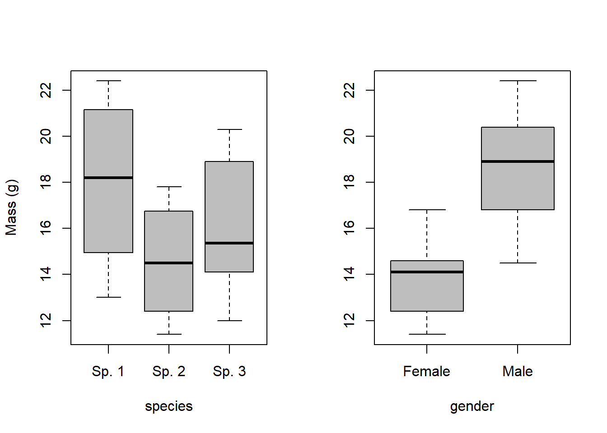
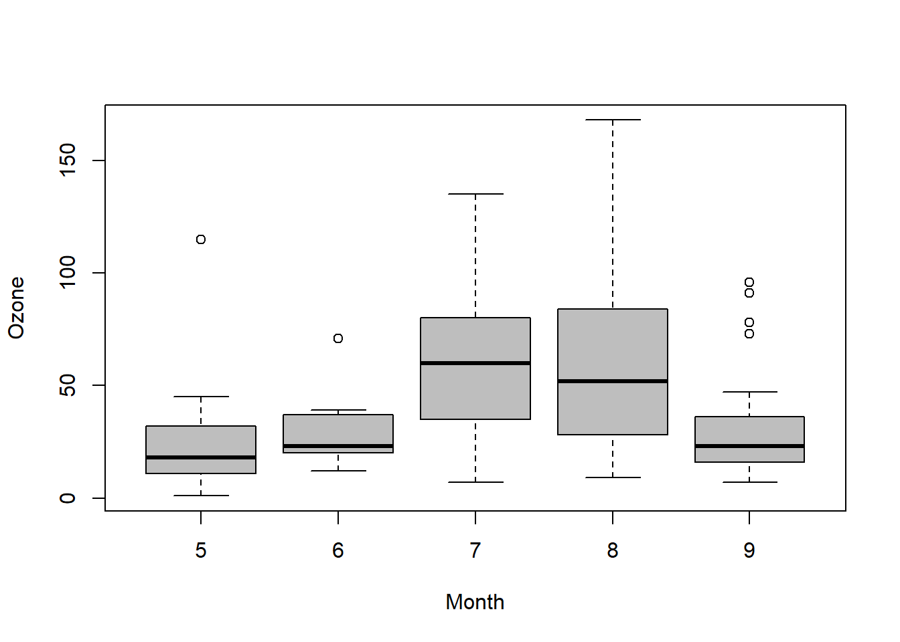
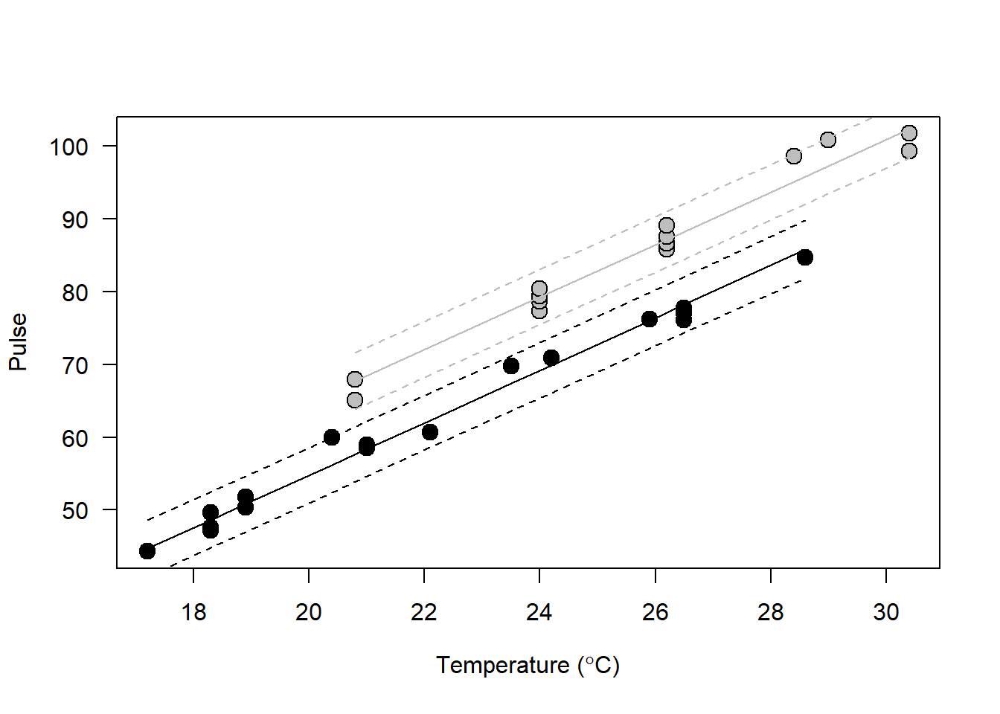

Linear models

Introduction
This week, we will introduce a class of statistical tools known collectively as linear models. This class of tools includes such examples as one-way ANOVA, linear regression and correlation, and by extension includes all other n-way ANOVAs, multiple linear regression, and analysis of covariance (ANCOVA). Later this semester, we will see that these models can be extended even further to include generalized linear models, generalized linear mixed models, and a number of multivariate techniques for complex data analysis.
So, that said, this week is the gateway into the rest of the world of parametric and semi-parametric statistics. As a result, we will focus primarily on parametric applications this week and next, although we will discuss the simple case of the Kruskal-Wallis test as an alternative to the parametric ANOVA. In two weeks you will know why you will almost never need this test again! The over-arching theme for this week is that any of these methods can be expressed as the formula for a line, which is how they got their names. We will start with ANOVA because it is analagous to many of the methods that we’ve already discussed. However, it is important to recognize that this is just a special case of linear models. We will show this during our discussions this week.
Because we are now entering into the realm of ‘the rest of statistics’ we also need to start ‘talking the talk’ in addition to ‘walking the walk’, so we will practice how to write methods sections for these tests and how to report the results. In reality, once you are comfortable using a couple of functions in R, writing up the methods and results is more challenging than fitting models, so we want to be thoughtful about how we do it!
Analysis of variance (ANOVA)
One-way ANOVA
We will use some of the built-in datasets in R this week to demonstrate our analyses and show how to communicate the methods and the results of our statistical inference.
Let’s start by loading up the PlantGrowth dataset in R:
Here, we see that we have a dataframe with 30 observations of two variables. The first variable describes plant growth (in units of mass), and the second variable describes control and treatment groups for individual plants.
Let’s begin by fitting a one-way ANOVA to the plant data. In practice, this is very easy. First of all though, we would report our methods like this:
We used a one-way analysis of variance (ANOVA) to estimate the effects of treatment group on the mass (g) of plants assuming a Type-I error rate of \(\alpha\) = 0.05. Differences between groups were assumed to be significant at p < 0.05.
Easy to do, but not very useful for getting the information that we need. What we get here is essentially just one part of the information that we would like to (should) report.
If we look at the summary of the output, we can get more of what we need:
That’s better, and we get some useful information here. First of all, we get the value of the test statistic, the df, and the p-value for the model. We also get the \(R^2\) for the model: 0.26. This statistic tells us roughly what percentage of the total variance in the data is explained by the model we fit. Another way of thinking of this is as a signal-to-noise ratio. More formally, it is the sum of squares between groups divided by the sum of squares total:
\[R^2 = \frac{SSB}{SST}\]
Let’s use the anova function to summarize the object a little further.
Okay, this is really what we needed: an ANOVA table with a break down of the residuals, mean squared errors, etc. And, we can now say:
We found that the treatment had a significant effect on plant weight (ANOVA, F = 4.846, df1 = 2, df2 = 27, p = 0.0159).
NOTE that all of these statistics were present in the summary of the model, as well. They just weren’t neatly organized, and we would need to do the calculations by hand to drag them out of it.
But, what if we want to know more about how treatment affected weight? Then, we could use a ‘pair-wise’ comparison to test for differences between factor levels. Because this essentially means conducting a whole bunch of t-tests, we need a way to account for our repeated Type-I error rate, because at \(\alpha\) = 0.05 we stand a 1 in 20 chance of falsely rejecting the null even if it is true.
One tool that lets us make multiple comparisons between groups is the Tukey HSD (honest significant difference) test. This test makes comparisons between each group while controlling for Type-I error. Essentially, this makes it harder to detect differences between groups but when we do we are more sure that they are not spurious. Sound confusing? At least it’s easy to do in R.
This report shows us exactly how the response differs with respect to the treatment groups. Here, we see that the only significant difference occurs between trt2 and trt1. How do we know this? based on the p-values…
For the readers, and for us, it may be easier to see this information displayed graphically:

In addition to what we wrote before, we can now say something along the lines of:
“We found that the mass of plants in the trt2 group (5.5 \(\pm\) .4 g) was significantly greater than plants in the trt1 group (4.7 \(\pm\) .8 g; Tukey HSD, p = 0.012). However, we failed to detect differences in mass between plants in the control group (5.0 \(\pm\) 0.6 g) and trt1 (p = 0.39) or trt2 (p = 0.20).”
Two-way ANOVA
Next, we’ll step up the complexity and talk about cases for which we have more than one grouping variable and some kind of numeric response. In these cases, we can use a two-way (or ‘n-way’ depending on number of factors) ANOVA to examine effects of more than one grouping variable on the response.
Here, we will use a dataset describing differences in the mass of belly- button lint collected from males and females of three species of apes.
Main effects model
Now we can fit a model to the data. This will work the same way as for the one-way ANOVA above, but this time we will add more terms on the right hand side of the equation. We will start by looking at the main effects model for this dataset.
What is a main-effects model? This model assumes that the response of interest, in this case the mass of belly button lint, lintmass, is affected by both species and gender, and that within species the effect of gender is the same. For example, the mass of belly button lint could be greater in one species compared to others, and if there is a difference between sexes we would expect that trend to be the same across species (e.g., boys always have more lint than girls- sorry guys, it’s probably true!).
As you can see, the output for the model is much the same as for the one- way ANOVA. The only real difference is that we have more than one grouping variable here.
We could look at the data all at once, but this gets a bit messy:
# Make the boxplot to start with
boxplot(formula=lintmass~species+gender, # Formula
data=lint, # The data set
col='gray', # Color for box fill
ylab='Mass (g)', # Label for y-axis
names=rep(c('Species 1', 'Species 2', 'Species 3'), 2),
boxwex=.25
)
# Add a vertical line to separate sexes
abline(v=3.5, col='black', lwd=1)
# Label sexes at the top of the plot
mtext(text='Female', side=3, at = c(23, 2))
mtext(text='Male', side=3, at = c(23, 5))

We can also look at the factors seperately:
# Set the plotting window so it can
# fit two boxplots side by side
par(mfrow=c(1,2))
# Add the first boxplot to the plotting window
boxplot(formula=lintmass~species,
data=lint,
col='gray',
ylab='Mass (g)',
names = c('Sp. 1', 'Sp. 2', 'Sp. 3')
)
# Add the second boxplot
boxplot(lintmass~gender,
data=lint,
col='gray',
ylab='',
names=c('Female', 'Male')
)

Hopefully after seeing these results you are now starting to realize how important a few well-placed figures and tables can be for clearly communicating the results of your research (even if it is about belly-button lint).
Interaction terms
The n-way ANOVA is the first kind of model we have used in which it is possible to consider interactions between two factors. An interaction is a situation that occurs when the effects of two or more factors is not additive. This means that the effect of gender might change for different species. For example, let us consider the following scenario in the lint data.
Perhaps we hypothesize that lint accumulation in the belly buttons of females differs in pattern from males due to social grooming patterns and sex-specific behavioral patterns favoring females. As a result, we might expect that sex and species could have some kind of non-additive effect on lint mass in these apes. To test this, we would use the following:
Alas, in the case of the lint model, this interaction is not significant, so we now have some evidence to suggest that either our hypothesis or our experimental design (or both) were flawed.
Note that the n-way ANOVA is also the framework within which the randomized block design is implemented. We will not cover that in this course as the implementation is identical to that above and virtually none of you will ever have any occasion to actually use a randomized block design.
Non-parametric “ANOVA”: Kruskal-Wallis
We will give the non-parametric Kruskal-Wallis test a brief treatment here. The main reason that the treatment will be brief is that we will cover a wide variety of methods from now until the end of this course that will all but eliminate the need for this technique in your tool box. However, some of you will inevitably have some need for this (probably because the edict has been passed down to you from a superior who doesn’t ‘get’ GLM).
We will use the airquality data for this example
We find that there are signigicant shifts in median Ozone between months. Hopefully, it is now obvious that we can use a boxplot to visualize these differences.

As far as the utility of Kruskal-Wallis goes, this is about it without getting into gross complexities that, in and of themselves, warrant an alternative approach. The alternative approach will be the focus of much discussion for the rest of the semester.
Linear regression
We have now considered the case of what to do when we have a numerical response and categorical explanatory variable(s). But, what if we have both a numerical response and numerical explanatory variables? Fear not, there is a stat for that! Now we are entering the realm of correlation and regression.
When we fit a linear regression model, we are trying to explain relationships between some response of interest (dependent variable) and one or more explanatory (independent) variables.
As with all linear models the goal of regression analysis is, in it’s simplest sense, to fit a line through all of the points in bivariate space that minimizes the distance between the points and a line of the form:
\[y = mx + b\]
or more appropriately:
\[Y_i = \beta_0 + \beta_i X_i\]
We will discuss this and other ideas related to linear models in class. For the casual reader, we are ignoring an important part of these statistical models for now. In most cases, though, we will be estimating a parameter for the intercept and one parameter for each explanatory variable of interest.
Data!
These data are for fertility and infant mortality rates as related to a number of socio-economic indicators. Take a moment to look at them:
Now, let’s get cracking.
We’ll start by fitting a simple model and then build complexity
Fit a model that relates fertility to education level. Notice that this looks exactly the same as the call to lm for the ANOVAs above? That’s because they are the same thing and people have been lying to you your whole life!!!
We see that there is a significant negative relation between Education level and fertility. In other words, more highly educated individuals have fewer children. You can tell this is a negative relationship because of the minus sign in front of the coefficient. We know that the relationship is significant because of the small p-value and corresponding significance codes.
We can also see that we have explained a little more than 40% of the variability in the response with this one explanatory variable if we look at the \(R^2\) value that is returned.
This is as far as the summary goes for linear regression for now. That is, we don’t need the ANOVA table any more because we have no factors- just continuous variables. What we end up with in this summary are the coefficients (corresponding to parameters of a model) that can be used to describe the line that passes through the data and minimizes the residual errors.
WHAT??
Let’s explain this by actually looking at the data
# First make a sequence of new values for Education across observed range
new <- data.frame(Education=seq(0,55,.1))
# Plot the raw data
par(mar=c(4.5,4.5,1,1))
plot(swiss$Education, swiss$Fertility, ylab='Fertility',
xlab='Education', pch=21, bg='gray', cex=1.5, ylim=c(30, 100))
# Now, we will add a trendline
preds = predict(fert.mod, newdata=new,
interval = 'prediction')
lines(new[,1], preds[,1], col='black', lty=1, lwd=2)
lines(new[,1], preds[,3], col='red', lty=1, lwd=2)
lines(new[,1], preds[,2], col='red', lty=1, lwd=2)

FYI these are the kinds of regression fits that terrify me because of the one point way out there by itself
We can, of course, extend this to include multiple continuous explanatory variables of interest.
Example:
During the next couple of weeks, we’ll try to figure out a way to deal with this rat’s nest of different explanatory variables.
Analysis of covariance (ANCOVA)
Alright, to wrap up this crazy, eye-opening week we are going to unleash the power of ANCOVA. Hopefully the power and limitations of this approach will be readily apparent to you. If not, we will talk about them to finish anyway so don’t worry.
ANCOVA is the way into the world of real, complex data analyses. It will serve as the foundation for the next several weeks in this course. Get to know it well, it is your friend.
So here we are:
We are in the real world and we have multiple explanatory variables that we would like to test; some are factors and some are continuous. We want a nice elegant way of wrapping these all in to one analysis. How? It’s easier than you might think…
Read in a new data set.
This data set contains pulses of two species of crickets collected under varying temperatures.
Species Temp Pulse
1 ex 20.8 67.9
2 ex 20.8 65.1
3 ex 24.0 77.3
4 ex 24.0 78.7
5 ex 24.0 79.4
6 ex 24.0 80.4
Here we want to investigate the effects of species and temperature on pulses of individual crickets.
Install the car package. We need a function from this library for summary.
We see that there are significant effects of species and temperature on the pulse of individual crickets. Everything else proceeds as above! We can build in complexity as needed, and we can make predictions as above.
Making and plotting model predictions
Here we will take a quick look at how to plot model predictions over our raw data to demonstrate the relationships we have discovered and to show how they compare to our observations.
# Plot the raw data
plot(crickets$Temp,
crickets$Pulse,
pch=21,
bg=c('gray', 'black')[crickets$Species],
cex=1.5,
ylab = 'Pulse',
xlab = expression(paste('Temperature (', degree, 'C)')),
yaxt = 'n')
# Add the y-axis labels and rotate them
axis(side=2, las=2)
# Make predictions from the fitted model object
preds <- (predict.lm(cricket.mod,
newdata = crickets,
interval = 'prediction'))
# Plot the predictions
# Add prediction lines for species 'ex'
# Mean
lines(crickets$Temp[crickets$Species=='ex'],
preds[,1][crickets$Species=='ex'], col='gray', lty=1)
# Lower
lines(crickets$Temp[crickets$Species=='ex'],
preds[,2][crickets$Species=='ex'], col='gray', lty=2)
# Upper
lines(crickets$Temp[crickets$Species=='ex'],
preds[,3][crickets$Species=='ex'], col='gray', lty=2)
# Add prediction lines for species 'niv'
# Mean
lines(crickets$Temp[crickets$Species=='niv'],
preds[,1][crickets$Species=='niv'], col='black', lty=1)
# Lower
lines(crickets$Temp[crickets$Species=='niv'],
preds[,2][crickets$Species=='niv'], col='black', lty=2)
# Upper
lines(crickets$Temp[crickets$Species=='niv'],
preds[,3][crickets$Species=='niv'], col='black', lty=2)

Assumptions of general linear models
Now that you hold real power in your hands to do data analysis, we need to to have our first talk about due diligence and assumptions of the statistical models that we use.
There are three fundamental assumptions that we either need to validate or address through experimental design in this class of models.
- Independence of observations.
- Normality of residuals (with mean=0 and sd=1)
- Homogeneity of variances (i.e. homoscedasticity)
We will discuss what each of these means in class next week, and during the next several weeks we will discuss methods for verifying these assumptions or relaxing the assumptions to meet our needs through specific techniques.
This work is licensed under a Creative Commons Attribution 4.0 International License. Data are provided for educational purposes only unless otherwise noted.